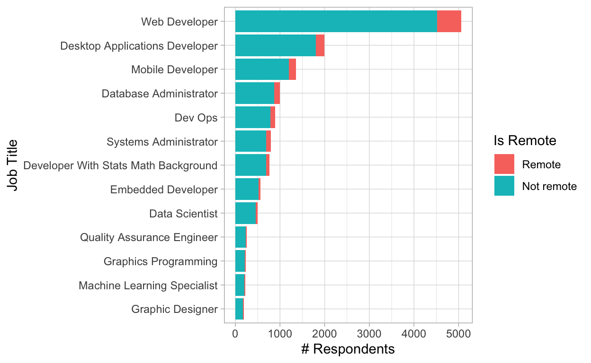
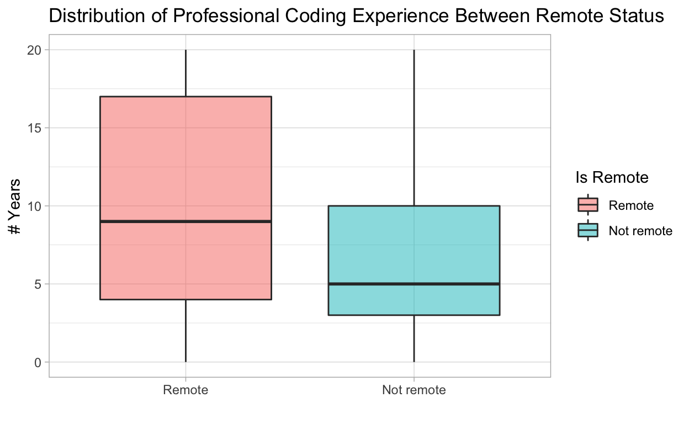

In this article, we deal with the unbalanced dataset in classification.
library(tidyverse)
theme_set(theme_light())
stack_overflow <- read_csv("https://raw.githubusercontent.com/juliasilge/supervised-ML-case-studies-course/master/data/stack_overflow.csv") %>%
mutate(remote = factor(remote, levels = c("Remote", "Not remote"))) %>% # reorder level for consistency
mutate(across(where(is.character), factor)) %>% # all char type to factor type for modelling purpose
mutate(across(where(is.logical), as.numeric))
# Overview
head(stack_overflow)
# A tibble: 6 x 22
respondent country salary years_coded_job open_source hobby
<dbl> <fct> <dbl> <dbl> <dbl> <dbl>
1 3 United… 1.14e5 20 1 1
2 15 United… 1.00e5 20 0 1
3 18 United… 1.30e5 20 1 1
4 19 United… 8.25e4 3 0 1
5 26 United… 1.75e5 16 0 1
6 55 Germany 6.45e4 4 0 0
# … with 16 more variables: company_size_number <dbl>, remote <fct>,
# career_satisfaction <dbl>, data_scientist <dbl>,
# database_administrator <dbl>,
# desktop_applications_developer <dbl>,
# developer_with_stats_math_background <dbl>, dev_ops <dbl>,
# embedded_developer <dbl>, graphic_designer <dbl>,
# graphics_programming <dbl>, machine_learning_specialist <dbl>,
# mobile_developer <dbl>, quality_assurance_engineer <dbl>,
# systems_administrator <dbl>, web_developer <dbl>
stack_overflow %>%
glimpse()
Rows: 6,991
Columns: 22
$ respondent <dbl> 3, 15, 18, 19, 26, 55,…
$ country <fct> United Kingdom, United…
$ salary <dbl> 113750.000, 100000.000…
$ years_coded_job <dbl> 20, 20, 20, 3, 16, 4, …
$ open_source <dbl> 1, 0, 1, 0, 0, 0, 0, 0…
$ hobby <dbl> 1, 1, 1, 1, 1, 0, 1, 1…
$ company_size_number <dbl> 10000, 5000, 1000, 100…
$ remote <fct> Not remote, Remote, Re…
$ career_satisfaction <dbl> 8, 8, 9, 5, 7, 9, 5, 8…
$ data_scientist <dbl> 0, 0, 0, 0, 0, 0, 0, 0…
$ database_administrator <dbl> 0, 0, 0, 0, 0, 0, 0, 0…
$ desktop_applications_developer <dbl> 0, 0, 0, 0, 0, 0, 0, 0…
$ developer_with_stats_math_background <dbl> 0, 0, 0, 0, 0, 0, 0, 0…
$ dev_ops <dbl> 0, 0, 1, 0, 0, 0, 0, 0…
$ embedded_developer <dbl> 0, 1, 1, 0, 0, 0, 0, 0…
$ graphic_designer <dbl> 0, 0, 0, 0, 0, 0, 0, 0…
$ graphics_programming <dbl> 0, 0, 0, 0, 0, 0, 0, 0…
$ machine_learning_specialist <dbl> 0, 0, 0, 0, 0, 0, 0, 0…
$ mobile_developer <dbl> 0, 0, 0, 0, 0, 0, 0, 0…
$ quality_assurance_engineer <dbl> 0, 0, 1, 0, 0, 0, 0, 0…
$ systems_administrator <dbl> 0, 0, 0, 0, 0, 0, 0, 0…
$ web_developer <dbl> 0, 0, 1, 1, 1, 1, 1, 1…
stack_overflow %>%
count(remote, sort = TRUE)
# A tibble: 2 x 2
remote n
<fct> <int>
1 Not remote 6273
2 Remote 718
stack_overflow %>%
count(country, sort= TRUE)
# A tibble: 5 x 2
country n
<fct> <int>
1 United States 3486
2 United Kingdom 1270
3 Germany 950
4 India 666
5 Canada 619
stack_overflow %>%
count(years_coded_job, sort = TRUE)
# A tibble: 21 x 2
years_coded_job n
<dbl> <int>
1 2 838
2 1 750
3 3 746
4 4 634
5 20 614
6 5 574
7 6 378
8 9 347
9 7 322
10 10 302
# … with 11 more rows
pivot_longer_stack <- stack_overflow %>%
pivot_longer(data_scientist:web_developer,
names_to = "job") %>%
filter(value == 1) %>%
mutate(job = str_to_title(str_replace_all(job, "_", " ")))
pivot_longer_stack %>%
count(job, remote, sort = TRUE) %>%
mutate(job = fct_reorder(job, n)) %>%
ggplot(aes(job, n, fill = remote)) +
geom_col() +
coord_flip() +
labs(
x = "Job Title",
y = "# Respondents",
fill = "Is Remote"
) 
stack_overflow %>%
ggplot(aes(remote, years_coded_job, fill = remote)) +
geom_boxplot(alpha = .5) +
labs(
x = "",
y = "# Years",
fill = "Is Remote",
title = "Distribution of Professional Coding Experience Between Remote Status"
)
stack_overflow %>%
count(remote, sort = TRUE)
# A tibble: 2 x 2
remote n
<fct> <int>
1 Not remote 6273
2 Remote 718There are about ten times more non-remote developers than there are remote developers. We are dealing with unbalanced datasets.
# load tidymodels
library(tidymodels)
library(themis)
# create stack_select dataset
stack_select <- stack_overflow %>%
select(-respondent) # redundant in the model
# split data into training and testing tests
set.seed(1234)
stack_split <- stack_select %>%
initial_split(p = 0.8, stata = remote)
stack_train <- training(stack_split)
stack_test <- testing(stack_split)
# define the roles of all columns in the dataset
stack_recipe <- recipe(remote ~ ., data = stack_train) %>%
step_downsample(remote)
# pre-processing
stack_prep <- prep(stack_recipe)
stack_down <- juice(stack_prep)
# check on the result of downsample
stack_down %>%
count(remote)
# A tibble: 2 x 2
remote n
<fct> <int>
1 Remote 573
2 Not remote 573Prepare the specification for fitting the data
glm_spec <- parsnip::logistic_reg() %>%
set_engine("glm")
tree_spec <- parsnip::decision_tree() %>%
set_engine("rpart") %>%
set_mode("classification")
# build a workflow
stack_wf <- workflow() %>%
add_recipe(stack_recipe)
stack_glm <- stack_wf %>%
add_model(glm_spec) %>%
fit(data = stack_train)
stack_tree <- stack_wf %>%
add_model(tree_spec) %>%
fit(data = stack_train)
stack_glm
══ Workflow [trained] ═══════════════════════════════════════════════════════════════════════════
Preprocessor: Recipe
Model: logistic_reg()
── Preprocessor ─────────────────────────────────────────────────────────────────────────────────
1 Recipe Step
● step_downsample()
── Model ────────────────────────────────────────────────────────────────────────────────────────
Call: stats::glm(formula = ..y ~ ., family = stats::binomial, data = data)
Coefficients:
(Intercept)
1.483e+00
countryGermany
5.693e-01
countryIndia
-4.182e-01
countryUnited Kingdom
1.523e-01
countryUnited States
-5.179e-01
salary
7.452e-07
years_coded_job
-7.554e-02
open_source
-3.582e-01
hobby
-1.527e-01
company_size_number
7.989e-05
career_satisfaction
-7.112e-02
data_scientist
1.898e-01
database_administrator
-2.360e-01
desktop_applications_developer
2.477e-01
developer_with_stats_math_background
-5.532e-03
dev_ops
-7.902e-02
embedded_developer
1.737e-01
graphic_designer
5.876e-02
graphics_programming
1.796e-01
machine_learning_specialist
3.323e-02
mobile_developer
-2.217e-01
quality_assurance_engineer
4.531e-01
systems_administrator
-1.546e-01
...
and 6 more lines.
stack_tree
══ Workflow [trained] ═══════════════════════════════════════════════════════════════════════════
Preprocessor: Recipe
Model: decision_tree()
── Preprocessor ─────────────────────────────────────────────────────────────────────────────────
1 Recipe Step
● step_downsample()
── Model ────────────────────────────────────────────────────────────────────────────────────────
n= 1146
node), split, n, loss, yval, (yprob)
* denotes terminal node
1) root 1146 573 Remote (0.5000000 0.5000000)
2) years_coded_job>=13.5 305 101 Remote (0.6688525 0.3311475) *
3) years_coded_job< 13.5 841 369 Not remote (0.4387634 0.5612366)
6) company_size_number< 5.5 93 30 Remote (0.6774194 0.3225806) *
7) company_size_number>=5.5 748 306 Not remote (0.4090909 0.5909091)
14) country=India,United States 490 233 Not remote (0.4755102 0.5244898)
28) company_size_number< 300 275 122 Remote (0.5563636 0.4436364) *
29) company_size_number>=300 215 80 Not remote (0.3720930 0.6279070) *
15) country=Canada,Germany,United Kingdom 258 73 Not remote (0.2829457 0.7170543) *
results <- stack_test %>%
bind_cols(predict(stack_glm, stack_test) %>%
rename(.pred_glm = .pred_class)) %>%
bind_cols(predict(stack_tree, stack_test) %>%
rename(.pred_tree = .pred_class))
results %>%
conf_mat(truth = remote, estimate = .pred_glm)
Truth
Prediction Remote Not remote
Remote 97 453
Not remote 48 800
results %>%
conf_mat(truth = remote, estimate = .pred_tree)
Truth
Prediction Remote Not remote
Remote 111 575
Not remote 34 678
## Calculate accuracy
accuracy(results, truth = remote, estimate = .pred_glm)
# A tibble: 1 x 3
.metric .estimator .estimate
<chr> <chr> <dbl>
1 accuracy binary 0.642
accuracy(results, truth = remote, estimate = .pred_tree)
# A tibble: 1 x 3
.metric .estimator .estimate
<chr> <chr> <dbl>
1 accuracy binary 0.564
## Calculate positive predict value
ppv(results, truth = remote, estimate = .pred_glm)
# A tibble: 1 x 3
.metric .estimator .estimate
<chr> <chr> <dbl>
1 ppv binary 0.176
ppv(results, truth = remote, estimate = .pred_tree)
# A tibble: 1 x 3
.metric .estimator .estimate
<chr> <chr> <dbl>
1 ppv binary 0.162